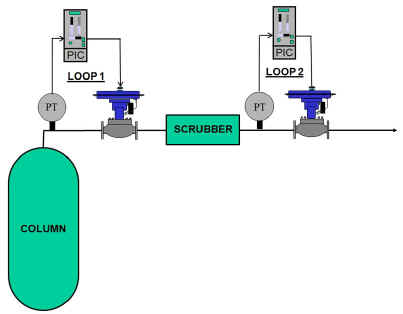
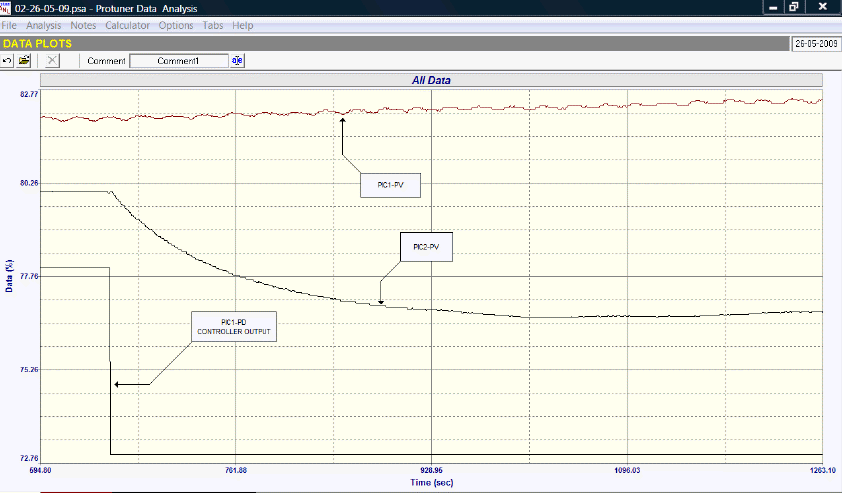
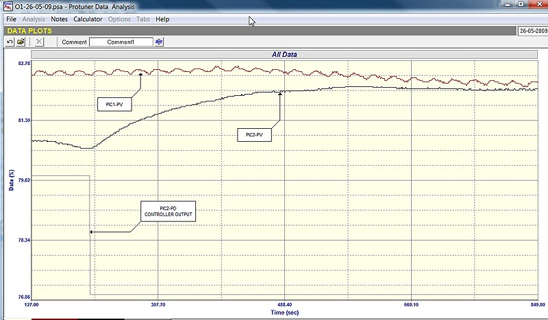
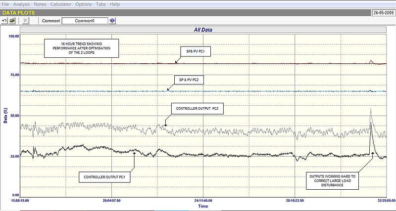

Control
Loop Case History 108
Successful
optimisation of interactive pressure loops
A previous article on tuning feedback controllers to decouple
interactive processes was published in South African
Instrumentation and Control in Loop Signature P2-5 in January
2006. (The series is also available on CD from the author for
persons outside Southern Africa). To recap, in general feedback
control loops do not work very well together in interactive
situations.
Two interactive loops can be decoupled to a certain extent by
tuning them in particular ways, but the best solution is to
decouple them dynamically which involves using feedforward
decouplers in each direction. The problem with tuning is that
all one can do is to tune the one loop as fast as possible, and
the other slowly. An excellent extreme example of this is often
found in plants in cases where two loops are very interactive.
The operators know exactly how to decouple them. They place the
one loop in manual. A loop in manual is effectively an
infinitely slow tune.
Another problem of decoupling loops by tuning is the fact
that if you were to tune each of the loops with the other in
manual, the dynamics of each loop alters as soon as the other
loop is placed in automatic. This is because the coupling
between the processes changes the dynamics of each loop when the
controllers are in automatic. Therefore it is actually necessary
to tune each loop with the other in automatic. This can create a
further problem insomuch that if they are now both tuned
properly to work with both in automatic, then if either loop is
placed in manual, then the other loop that is still in
automatic, could now react either very slowly, or very much
faster.
A good example of successful tuning two interactive loops was
found in a petro-chemical refinery where I recently performed
some optimisation.

Fig. 1
As shown in Figure 1, the one process consists of an outlet
gas pressure control on the top of a distillation column. The
gas passes through the pressure control valve, and then goes
through a scrubber, the outlet pressure of which is also
controlled by another valve. Thus there are effectively two
pressure control valves in series. This system is only really
workable due to the fact that the scrubber has got quite a large
capacity, which slows down pressure changes between the two
valves.
With the loops being quite interactive, the original tuning
of both controllers was really terrible. Controller PC1 was
tuned very slowly but very cyclically, whilst Controller PC2 was
tuned so slowly that it took almost hours to react to a change.
Both controllers also had huge PV filters which as detailed in
the Loop Signature first series, is highly undesirable.

Fig. 2
Figure 2 shows an open loop test with both controllers in
manual. A step change is made on the output of controller PIC1,
whilst the output of controller PIC2 is kept steady. The test
illustrated the following things:
Both loops reacted to the change, but Loop 1 is an
integrating loop and Loop 2 is self regulating.
Further analysis of Loop 1 shows the process is a simple
deadtime integrator with very small deadtime of about 10
seconds, and a process gain of 0.00057, which is equivalent
to a retention time of almost 3 hours. (Purely out of
interest this type of process was referred to in Loop
Signature P2-19 as a "Slow Pure Integrator" which
is very difficult to make unstable.)
Process 2 is extremely fast compared with Process 1 –
see analysis below.

Fig. 3
Figure 3 shows another open loop test with both controllers
in manual. A step change is made on the output of controller
PIC2, whilst the output of controller PIC1 is kept steady. This
test shows:
Both processes again react to the step change, but it
takes a relatively long time for the pressure change to
travel "backwards" through the scrubber and affect
Process 1’s pressure.
The analysis of Process 2shows it is basically a double
lag, self-regulating process with a very small deadtime, and
the two lags have time constant of about 40 seconds each. A
process with these relatively simple dynamics is not
difficult to control fairly quickly. It is also a very much
faster process than Process 1.
It was concluded from this, that if one was to tune
Controller 2 as quickly as possible, and then put in a medium
"slowish" tune on Controller 1, then interaction would
be minimised.
To achieve this it was necessary to tune Controller 2 first
using the step test shown in Figure 3. It was then placed in
automatic, and a further step test (not shown) was then
performed by stepping the output of Controller 1. Controller 1
was then tuned from this step. The response took the slightly
altered dynamics of Process 1into account, which resulted as
Controller 2 was in automatic. This enabled the tuning for
Controller 1 to cope with these altered dynamics.

Fig. 4
The tunings worked wonderfully. Figure 4 shows a 16 hour
performance trend with the plant operating under normal
conditions. A trend like this where there are quite a few load
disturbances occurring, is very useful to judge control
performance. One can see the controllers’ outputs moving
around to keep the PV’s on setpoint. In particular there was
an absolutely huge load disturbance which can be seen near the
end of the recording, where both outputs had to move
dramatically up to catch the disturbances. It is wonderful to
see how little variance occurred on the actual PV’s. Really
great, and highly impressive control performance. (It should be
noted that trends recorded when operating conditions are very
steady, are not useful as a means of judging of control
performance. It is only possible to judge the control in these
sorts of tests, if load changes occur.)
It is also quite interesting to realise that a control system
doesn’t ever eliminate variance. It just transfers it from the
one side of the process to the other, so the PV is kept
constant, and the variance now takes place on the PD (controller
output, which is the input to the process.)
Here are the "before and after" controller tunings:
| PARAMETER |
ORIGINAL
TUNING |
FINAL
TUNING |
| Controller
PIC1 |
|
|
| P (Gain) |
2.5 |
8.0 |
| I (Minutes/
repeat) |
5.0 |
19.0 |
| D (Minutes) |
0 |
0 |
| PV Filter
(Minutes) |
0.48 |
0 |
| Controller
PIC2 |
|
|
| P (Gain) |
2.1 |
9.0 |
| I(Minutes/
repeat) |
4.96 |
1.4 |
| D (Minutes) |
0.35 |
0 |
| PV Filter
(Minutes) |
0.4 |
0 |
One can see the vast differences between the old and
the new. Also it's a complete mystery as to why they had put
filters on the PV signals. There was absolutely no need for
them. It is also quite interesting to see that they had used a
relatively large derivative on the fast loop and not on the
slow. Once again it is obvious that the people who had done the
original tuning had not attended courses on practical control.
Index to articles
Michael
Brown is a specialist in control loop optimisation, with many years of
experience in process control instrumentation. His main activities are
consulting, and teaching practical control loop analysis and
optimisation. He gives training courses which can be held in clients'
plants, where students can have the added benefit of practising on live
loops. His work takes him to plants all over South Africa, and also to
other countries. He can be contacted at:
Tel (011) 486-0567
Fax (011) 646-2385
E-Mail: michael.brown@mweb.co.za
|